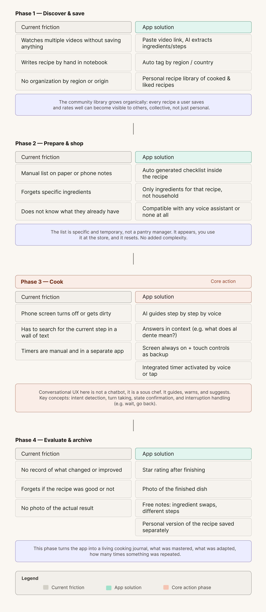

The obvious product was another recipe app. The real opportunity was voice.
When I started mapping this project, the easy answer was "build a better place to save recipes." Pinterest, Paprika, and a dozen others already do that reasonably well.
What kept surfacing instead, from my own cooking routine, was that saving a recipe was never the hard part. The hard part was the fifteen minutes during the cook: hands covered in flour, phone screen gone dark, scrolling back through a video to find the step I'd lost. I was writing recipes into a paper notebook specifically to avoid my phone, that's a signal, not a quirk.
So I made the same kind of call I made on Amorea: the obvious feature would ship, but it would not be the core. Saving and organizing recipes became table stakes. The product's actual bet became a conversational cook mode, an AI sous chef that talks you through a recipe step by step, so your hands never have to touch the screen at all.
Target user
The primary user cooks with intention, not convenience. They watch multiple videos before committing to a recipe, often seeking out creators native to that dish's region, an Italian grandmother for cacio e pepe, not a generic food blogger. They want the right recipe done right, and they're willing to do some work to get there. What they don't want is for the technology to be the thing standing between them and the stove.
-
—
What they do Watches multiple videos before choosing a recipe, prioritizing creators from the recipe'sregion of origin
-
—
What they use Uses voice assistants (Alexa, Google, Siri) primarily for timers
-
—
How they do it Currently writes recipes by hand in a notebook to avoid phone issues while cooking
-
—
What they shop for Shops specifically for each recipe not general household shopping
Four phases, one phase that actually matters most
Before touching any screen, I mapped the full journey from discovering a recipe to archiving the finished dish. Three of the four phases, discover, prepare, Evaluate, are calm. The user has both hands free and time to think.
Phase three, cooking, is the only phase where the user's hands are occupied and their attention is divided. It's the phase where every existing tool currently fails them. That asymmetry is why the cook mode isn't just one feature among several, it's the screen that justifies the whole product.

Designing around one constraint: hands are busy
-
—
No shopping list tab. Early architecture had a dedicated shopping section. I cut it. The ingredient checklist now lives inside the recipe itself, where the decision actually happens, you check off what you have while you're already looking at the recipe, not in a separate part of the app.
-
—
Cook mode hides the tab bar entirely. When you're cooking, nothing else in the app matters. Removing navigation removes the possibility of an accidental exit and keeps the one task that matters in full focus.
-
—
Voice first, touch as backup, never voice only. Kitchens are loud and wake words get missed. Every voice action in cook mode has a touch equivalent, so the experience degrades gracefully instead of breaking when voice fails.
-
—
The "Start cooking" button sits after the checklist, not before. Placing the primary CTA at the bottom of the ingredient review, rather than at the top of the screen, forces a review step before commitment, a small placement decision that prevents a real failure mode: starting a recipe you can't finish.
One component library, two platforms
I built kuk's design system early rather than retrofitting it once screens existed. With 16 native adapted iOS screens and 16 for Android sharing one underlying component library, consistency couldn't be optional, every button, card, and input had to hold its meaning across both platforms while still respecting each one's conventions.
The palette stays warm and food adjacent on purpose, never clinical, never the cold blue and white most utility apps default to. The visual language has to stay quiet, because the app is most often used in a messy, distracting kitchen where every extra visual decision is a tax on attention.

The hardest part wasn't the UI. It was defining how the AI sous chef thinks.
This is the part of kuk I'm proudest of, because it's the part that isn't a screen at all. A conversational flow has to handle interruption, ambiguity, and recovery, none of which a static wireframe captures. I designed the dialogue logic the same way I'd design a flow chart for any other system, with explicit rules for what the assistant does and doesn't do.
Core interaction rules
-
—
State awareness over one shot commands. Generic assistants treat every request as isolated. kuk's cook mode always knows which step you're on, so "how much longer?" and "go back" resolve correctly without you having to repeat context.
-
—
In context clarification, not dead ends. If you ask "what does al dente mean?" mid step, the assistant answers in place and returns you to the recipe it never forces you out of cook mode to get an answer.
-
—
A confirm then advance pattern, not autoplay. The assistant reads a step and waits for "done" or "next", spoken or tapped, before moving on. It guides at the user's pace instead of racing ahead of someone still chopping.
A sample exchange
Designing this meant thinking like a conversation designer and a product owner at once: what the assistant is allowed to say, when it asks versus assumes, and how it fails gracefully when it mishears something in a noisy kitchen. None of that shows up in a static frame, but all of it shows up the first time someone actually tries to use it.
Interactive prototype
The full flow, from feed to recipe detail to an active cook mode session, is built out as a clickable prototype in Figma.
A cooking companion that gets out of the way while you cook
kuk gives home cooks one place to save recipes worth trusting, see at a glance what they're missing before they shop, and cook hands free without losing their place, replacing a dead phone screen and a flour dusted notebook with a guide that simply talks them through it.
The best UX decision on this project was never a screen
The strongest move on kuk wasn't a layout choice, it was recognizing that the product's value lived in a moment with no screen at all, the thirty seconds where your hands are covered in dough and you just need to know what's next. Designing for that meant designing behavior, dialogue, and failure recovery, not just hierarchy and spacing.
It reinforced something I learned on Amorea from a different angle: the best reframe isn't the one that adds the most features, it's the one that tells you what to leave out. Here, that meant trusting voice as the primary interface and treating the screen as the backup, the opposite of how most mobile apps default to thinking.
Video demo
Click on the video to see the app demo